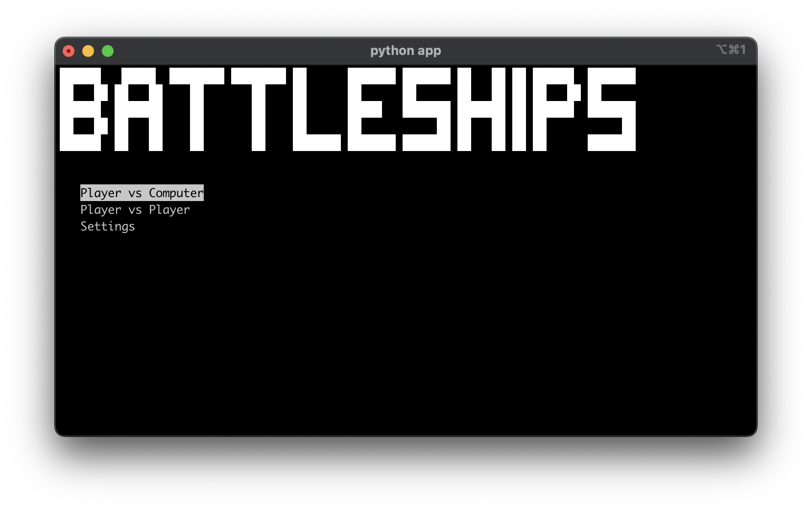
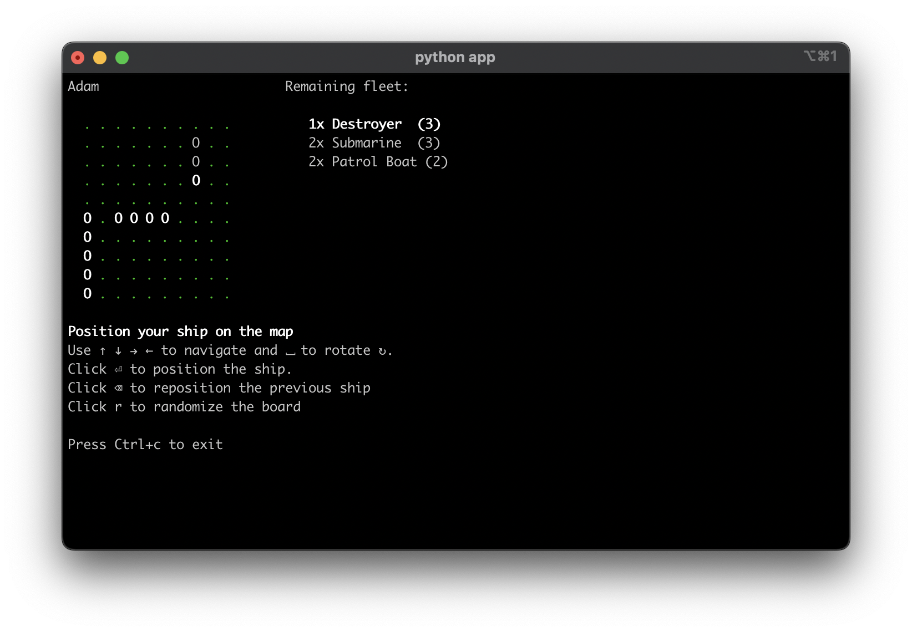
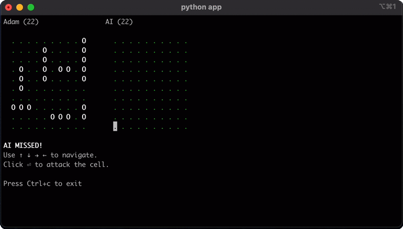
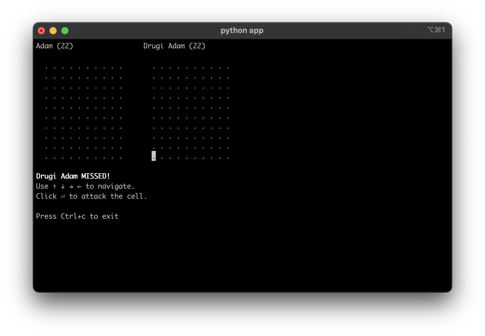
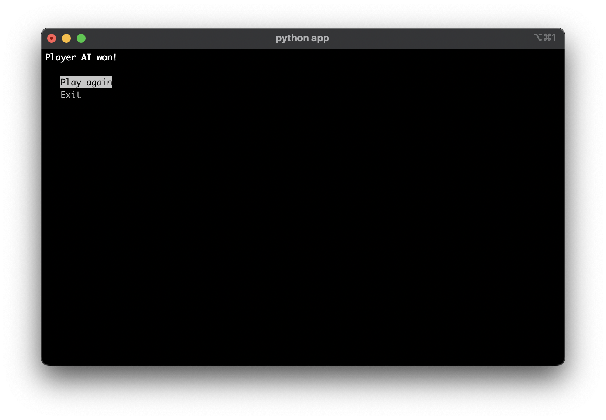
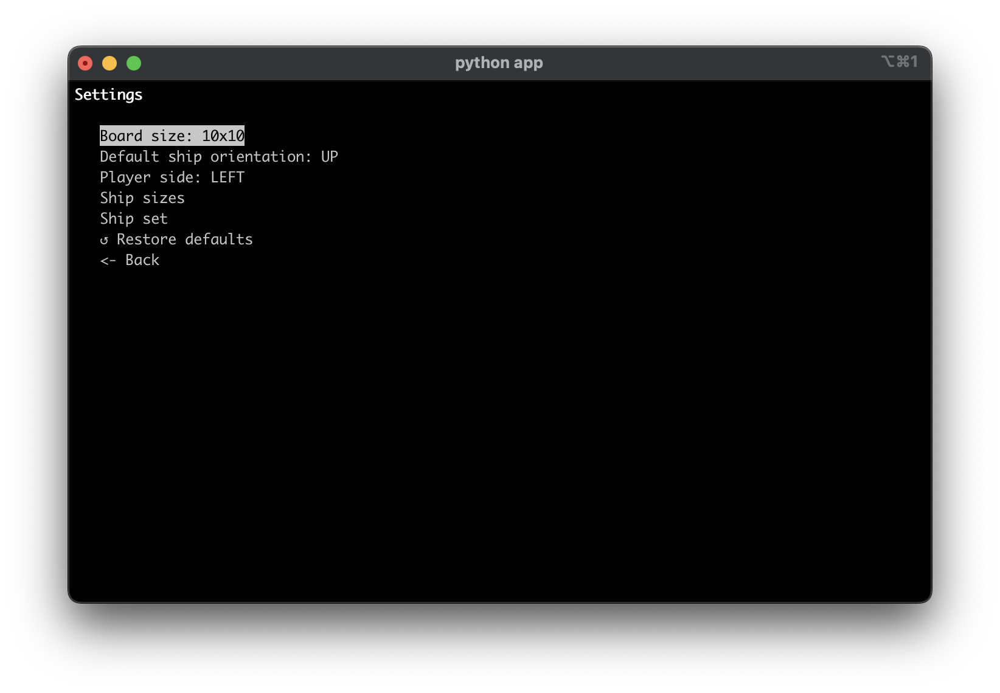

Wstęp
Battleships to implementacja popularnej gry w statki, która pozwala użtkownikowi zagrać przeciwko komputerowi
Dokumentacja
Szczegółowa dokumentacja kodu znajduje się na Github Pages: link
Wymagania
Python
3.11lub nowszyZainsalowanie wymaganych bibliotek
pip install -r requirements.txt
Automatyczne budowanie dokumentacji
Projekt ten umożliwia automatyczne budowanie dokumentacji bezpośrednio z docstringów za pomocą programu Sphinx. Napisałem skrypt, który dodatkowo ułatwia ten proces
Zbuduj dokumentację
source docs/generate.sh
Otwórz powstały plik
docs.html
Testy
Do testowania używam biblioteki pytest. Testy znajdują się w katalogu tests - należy wskazać go pytestowi
W głównym folderze znajduje się plik
pytest.inijest on bardzo ważny, ponieważ umożliwia wykrywanie testów znajdujących się w innym katalogu niż kod
W folderze
testspoza plikami testowymi znajduje się plikconftest.py. Jego zawartość wykonuje się przed wykonaniem testów. Usuwa on plik konfiguracyjny użytkownikaconfigs/user_config.jsonjeśli taki istnieje
Działanie
Włączenie gry
Żeby włączyć grę należy z głównego folderu repozytorium uruchomić komendę:
python app
Ekran główny

Jeśli ekran nie wyświetla się poprawnie, należy powiększyć okno terminala
Wszystkie menu w programie nawigowane są poprzez używanie strzałek i przycisku Enter
Na głównym ekranie możemy wybrać pomiędzy 2 trybami gry:
Walka z komputerem
Walka z innym graczem
Można również przejść do ustawień
Przygotowanie planszy

Oba tryby gry zaczynają się od podania imion graczy i przygotowania planszy. W przypadku walki z innym graczem następuje to dwukrotnie.
Użytkownik po kolei musi romieścić swoje statki na planszy.
Możliwe jest:
Obracanie i przemieszczanie statków
Edytowanie swojego ustawienia
Cofanie
Automatyczne rozstawienie (które można potem zmodyfikować samemu)
W liście z prawej strony wyświetla się typ obecnie edytowanego statku i lista statków, które jeszcze należy rozmieścić
Walka z komputerem

W tym trybie użytkownik walczy z komputerem, który gra za pomocą zmodyfikowanego przeze mnie algorytmu hunt/target (między innymi opisanego tutaj)
Krótki opis algorytmu
Tryb hunt:
Komputer strzela w losowe pola.
Zapamiętuje gdzie strzelał wcześniej, żeby się nie powtarzać.
Jeśli trafi to dodaje sąsiadujące komórki do listy celów i przechodzi w tryb target
Tryb target:
Komputer strzela po kolei w komórki na liście celów
Po ustrzeleniu kolejnej komórki usuwa on z listy celów elementy, które leżą w innej osi niż statek (mając do dyspozycji już 2 trafione komórki oś statku da się już ustalić)
Komputer uzupełnia listę celów o swoją sąsiadującą komórkę w osi statku.
Komputer powtarza kroki 1-4 aż do zatopienia statku. Po zatopieniu statku wraca on do trybu hunt
Walka z innym graczem

W trybie walki z innym graczem 2 osoby mogą walczyć na jednym komputerze wykonując ruchy na zmianę
Zakończenie walki

Kiedy jednemu graczowi zatoną wszystkie statki - gra się końćzy i wyświetlany jest jej wynik. W tym momencie można grę zakończyć lub zacząć od nowa (wrócić do menu)
Ustawienia

Gra pozwala na modyfikację pewnych ustawień za pomocą tekstowego menu. Ustawienia te są zapisywane w pliku configs/user_config.json. Jeśli zmieni się ustawienia i uruchomi się aplikacje ponownie - nie wrócą one do swoich wcześniejszych wartości (w tym celu należy zresetować je opcją restore defaults).
Ustawienia podstawowe bazowane są na pliku configs/default_config.json. Nie należy go modyfikować. Można za to stworzyć ręcznie plik configs/user_config.json na jego wzór. Lepszą metodą jednak jest modyfikacja ustawień poprzez wyżej pokazany przeznaczony do tego interface w aplikacji.
UI
Zdecydowałem się na interface tekstowy za pomocą biblioteki curses.
Interface użytkownika zaimplementowałem jako klasę ui.CLI. Takie rozwiązanie sprawia, że zamienienie CLI na GUI wymaga jedynie implementacji jednego nowego obiektu, który posiadałby takie analogiczne metody. Cała reszta kodu jest od niego niezależna
Modyfikacja CLI
W pliku app/cli_config.py znajdują się stałe umożliwiające łątwą modyfikację CLI
Uwagi
Jako lintera używałem flake8 z następującą konfiguracją:
#Plik: .flake8
[flake8]
per-file-ignores = __init__.py:F401
ignore = E501
W pliku
app\config.pyatrybuty klasyConfignazywam (wbrew typowej konwencji) wielkimi literami. Robię to, żeby w reszcie kodu wyraźnie było widać, że są to wartości z pliku konfiguracyjnego.Warstwa logiczna progamu ma 100% pokrycie w testach.
Autor: Adam Szokalski